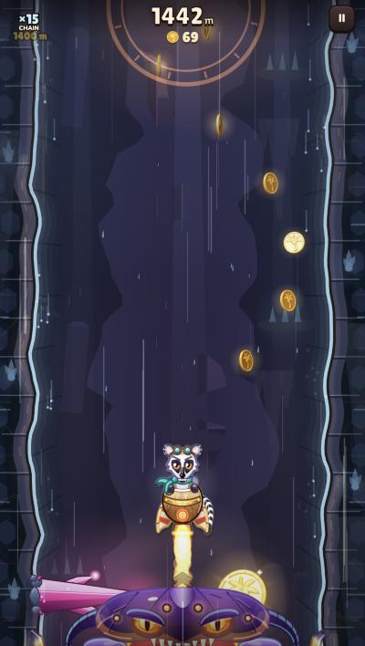
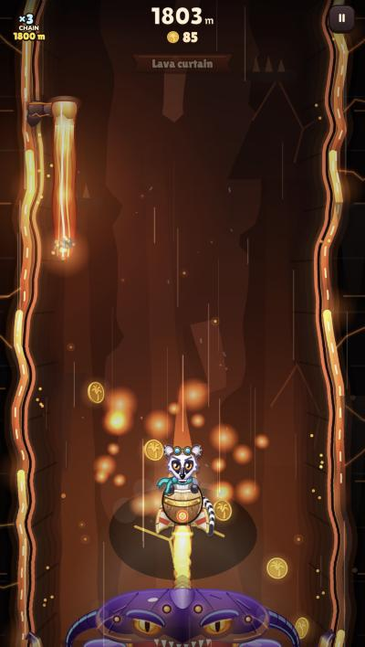

New sections and obstacles for the climb
Ten section ideas and twenty obstacle ideas, each drawn in the game's style and animated so you can see how it plays. Tap Pick on the ones you want. The bar at the bottom builds your run from Jungle to Magma as you go. When you're done, copy your picks and paste them in the chat.



- Twice as long per section. Jungle runs 680 m today and Caves 820 m. Doubled, each section lasts about 1.4 – 1.6 km, so the set pieces and named beats have room to breathe.
- At least two new sections between Jungle and Magma. Magma stays last. The bar below orders your picks from shallow to deep, with Basalt caves in the middle.
- Many more obstacle types. Each one belongs to a home section but can show up elsewhere, so later sections get a growing mix.
10 sections
Each one is a new palette, wall texture, background, floating particles and a sound for that zone (the zone effects you set up in the studio), plus two signature obstacles. Shown roughly from shallow to deep.
20 obstacles
Two per section. Lethal ones end the run on contact. Effect ones don't kill you: they push you, slow you or make you heavy, setting up the next hazard. Build size: S reuses a mechanic we already have, M is a new movement or attack, L adds a new system.
Also worth keeping in mind
More ideas, no preview yet
- Gear Grinder: a giant cog half out of the wall, teeth spinning (Mine).
- Spiked Roller: a spiked log rolling back and forth across a carved track (Temple).
- Waterfall Push: a water curtain that shoves you down and sideways (Lagoon).
- Ice Wall: ice grows in from both walls, leaving a gap that slides (Frost).
How picks turn into the game
Zones become a list instead of the three fixed heights, so adding a section is one palette, one set of walls and backgrounds, its hazard skins, its beats and a set piece, plus its own zone sound in the studio. Existing hazards (thorns, bats, crushers, geysers) get a skin for each new section, like they already do for Caves and Magma.
Effects need a status system
Bounce Cap, Frost Breath and Honey Drip are the non-lethal ones. They share one small system: a push or a timed slow on the rocket, shown on the pod (frost, honey) and on the thrust flame. Pick any of them and that system comes along once.